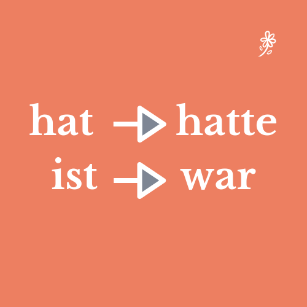
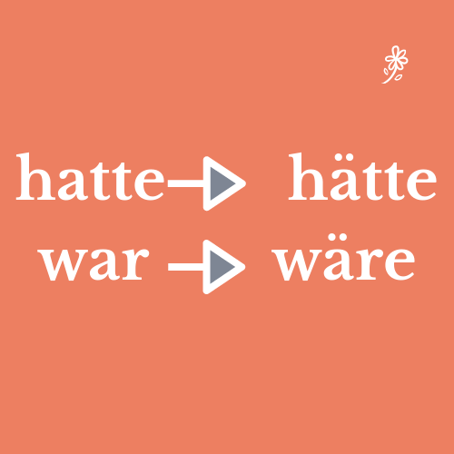
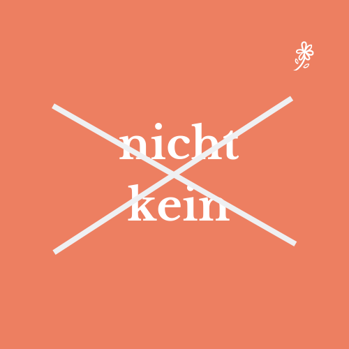
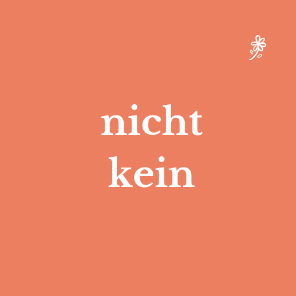
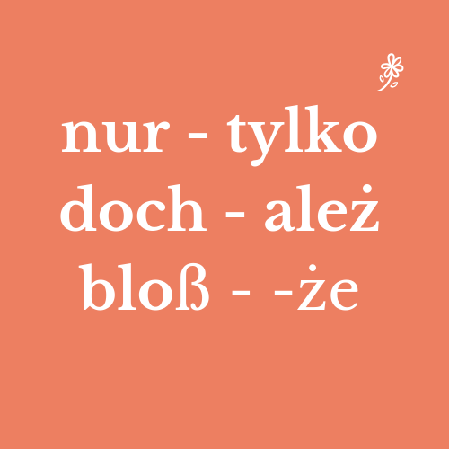

<?xml version="1.0" encoding="UTF-8"?><rss version="2.0"
	xmlns:content="http://purl.org/rss/1.0/modules/content/"
	xmlns:wfw="http://wellformedweb.org/CommentAPI/"
	xmlns:dc="http://purl.org/dc/elements/1.1/"
	xmlns:atom="http://www.w3.org/2005/Atom"
	xmlns:sy="http://purl.org/rss/1.0/modules/syndication/"
	xmlns:slash="http://purl.org/rss/1.0/modules/slash/"
	>

<channel>
	<title>Konjunktiv 2 Plusquamperfekt &#8211; Prosty &#8211; Niemiecki!</title>
	<atom:link href="../../../../category/gramatyka/konjunktiv-2-plusquamperfekt/feed/index.html" rel="self" type="application/rss+xml" />
	<link>https://prosty-niemiecki.pl</link>
	<description>Anna Przyrowska: blog o autorskiej metodzie nauki języka niemieckiego</description>
	<lastBuildDate>Thu, 10 Oct 2019 19:32:22 +0000</lastBuildDate>
	<language>pl-PL</language>
	<sy:updatePeriod>
	hourly	</sy:updatePeriod>
	<sy:updateFrequency>
	1	</sy:updateFrequency>
	<generator>https://wordpress.org/?v=6.3.1</generator>

<image>
	<url>../../../../wp-content/uploads/2018/10/cropped-indeks-32x32.png</url>
	<title>Konjunktiv 2 Plusquamperfekt &#8211; Prosty &#8211; Niemiecki!</title>
	<link>https://prosty-niemiecki.pl</link>
	<width>32</width>
	<height>32</height>
</image> 
	<item>
		<title>Płacz nad rozlanym mlekiem&#8230; Konjunktiv 2</title>
		<link>../../../../gramatyka/placz-nad-rozlanym-mlekiem-konjunktiv-2/</link>
					<comments>../../../../gramatyka/placz-nad-rozlanym-mlekiem-konjunktiv-2/#respond</comments>
		
		<dc:creator><![CDATA[Anna Przyrowska]]></dc:creator>
		<pubDate>Thu, 10 Oct 2019 19:30:45 +0000</pubDate>
				<category><![CDATA[gramatyka]]></category>
		<category><![CDATA[Konjunktiv 2 Plusquamperfekt]]></category>
		<category><![CDATA[czas przeszły w trybie przypuszczającym]]></category>
		<category><![CDATA[Konjunktiv 2]]></category>
		<category><![CDATA[Konjunktiv II]]></category>
		<category><![CDATA[Konjunktiv II Plusquamperfekt]]></category>
		<category><![CDATA[tryb przypuszczający]]></category>
		<category><![CDATA[tryb przypuszczający w przeszłości]]></category>
		<category><![CDATA[Vergangenheit]]></category>
		<category><![CDATA[Wunschsatz]]></category>
		<category><![CDATA[zdanie żywczeniowe]]></category>
		<guid isPermaLink="false">../../../../?p=2273</guid>

					<description><![CDATA[Konjunktiv 2 Plusquamperfekt &#8211; tryb przypuszczający w czasie przeszłym &#8211; to w gruncie rzeczy myślenie życzeniowe dotyczące wydarzeń, które zaszły]]></description>
										<content:encoded><![CDATA[
<p><strong>Konjunktiv 2 Plusquamperfekt</strong> &#8211; tryb przypuszczający w czasie przeszłym &#8211; to w gruncie rzeczy myślenie życzeniowe dotyczące wydarzeń, które zaszły w przeszłości. Ni mniej, ni więcej tylko płacz nad rozlanym mlekiem. Coś wydarzyło się, nie można zmienić biegu wydarzeń, zostaje tylko westchnąć &#8222;Ach, gdyby to<strong> nie </strong>wydarzyło się!&#8221;  </p>


<p>W języku polskim możemy domyślić się z kontekstu, że chodzi o czas przeszły. (Na przykład &#8211; &#8222;Ach, gdybym miał(a) więcej czasu! (<em>WTEDY</em><strong> </strong>&#8211; wyjaśnia wszystko) W języku niemieckim stosujemy zabieg gramatyczny. To znaczy używamy Konjunktiv 2  Plusquamperfekt ((w skrócie Konj II)</p>


<p>Nie będę stosowała żadnych tabelek!  (Jak się tworzy Konjunktiv 2 Plusquamperfekt zobacz<a rel="noreferrer noopener" aria-label=" tu (otwiera się na nowej zakładce)" href="https://www.grammatiktraining.de/konjunktiv2/grammatikanimation-konjunktiv2-der-vergangenheit.html" target="_blank"> tu</a>) Przekażę Wam najprostszy sposób opanowania tego zagadnienia. Opiszę poranek pewnego pechowca (Pechvogel). Oto opis (używam czasu <strong>Perfekt</strong>).</p>


<p style="background-color:#eb9058" class="has-background">Jani hat bis tief in die Nacht hinein gearbeitet. Er ist spät eingeschlafen. Der Wecker hat nicht geklingelt. Er hat verschlafen. Er hat kein Frühstück gegessen. Er hat den Bus verpasst. Er hat sich zur Arbeit verspätet. </p>


<h4 class="wp-block-heading" style="text-align:center">Pierwszy krok<br></h4>


<p>Tam gdzie jest czasownik &#8222;hat&#8221; &#8211; zamień na &#8222;hatte&#8221;, tam gdzie jest &#8222;ist&#8221; zamień na &#8222;war&#8221;,  (czasownik posiłkowy zostanie zmieniony z czasu Perfekt na Plusquamperfekt)</p>


<div class="wp-block-image"><figure class="aligncenter is-resized"></figure></div>


<h4 class="wp-block-heading" style="text-align:center">Drugi krok</h4>


<p>Zamień czasownik posiłkowy &#8222;hatte&#8221; na &#8222;hätte&#8221;, a &#8222;war&#8221; na &#8222;wäre&#8221;. </p>


<div class="wp-block-image"><figure class="aligncenter"><figcaption>Użyłeś formy Konjunktiv II</figcaption></figure></div>


<h4 class="wp-block-heading" style="text-align:center">Trzeci krok</h4>


<p>Skreśl zaprzeczenie, jeśli ono występuje w zdaniu (kein/nicht):</p>


<div class="wp-block-image"><figure class="aligncenter"></figure></div>


<p>Należy jednak dodać zaprzeczenie, jeśli w zdaniu nie występuje:</p>


<div class="wp-block-image"><figure class="aligncenter"></figure></div>


<h4 class="wp-block-heading" style="text-align:center">Czwarty krok</h4>


<p>Zachowaj trzecią formę czasownika. Odmień przez osoby, jeśli to konieczne, czasownik posiłkowy &#8222;wäre/hätte&#8221;. Użyj w zdaniu życzeniowym (Wunschsatz) <strong>koniecznie</strong>  jedną z trzech partykuł. </p>


<div class="wp-block-image"><figure class="aligncenter"></figure></div>


<p>Nie zapomnij o wykrzykniku!!! Oto gotowe zdania wyrażające żal, że coś wydarzyło się (lub nie):</p>


<p style="background-color:#eb9058" class="has-background">Hätte Jan doch  <strong>nicht</strong> bis tief in die Nacht hinein gearbeitet! (Jan hat bis tief in die Nacht hinein gearbeitet)</p>


<p style="background-color:#eb9058" class="has-background">Wäre er doch<strong> nicht</strong> spät eingeschlafen! (Er ist spät eingeschlafen.)</p>


<p style="background-color:#eb9058" class="has-background">Hätte der Wecker doch geklingelt! (Der Wecker hat<strong> nicht </strong>geklingelt)</p>


<p style="background-color:#eb9058" class="has-background">Hätte er doch <strong>nicht</strong> verschlafen! (Er hat verschlafen.)</p>


<p style="background-color:#eb9058" class="has-background">Hätte er doch das Frühstück gegessen!. (Er hat <strong>kein</strong> Frühstück gegessen)</p>


<p style="background-color:#eb9058" class="has-background">Hätte er doch den Bus <strong>nicht</strong> verpasst! (Er hat den Bus verpasst.)</p>


<p style="background-color:#eb9058" class="has-background">Hätte er sich doch zur Arbeit <strong>nicht</strong> verspätet! (Er hat sich verspätet.)</p>


<p>Prawda, że to jest proste </p>


<p>Zajrzyj również do tego <a href="../../../../slownictwo/vorschlag-propozycja/" target="_blank" rel="noreferrer noopener" aria-label="wpisu (otwiera się na nowej zakładce)">wpisu</a>, gdzie znajdziesz praktyczne zastosowanie Konjunktiv 2.<br></p>
]]></content:encoded>
					
					<wfw:commentRss>../../../../gramatyka/placz-nad-rozlanym-mlekiem-konjunktiv-2/feed/</wfw:commentRss>
			<slash:comments>0</slash:comments>
		
		
			</item>
	</channel>
</rss>
